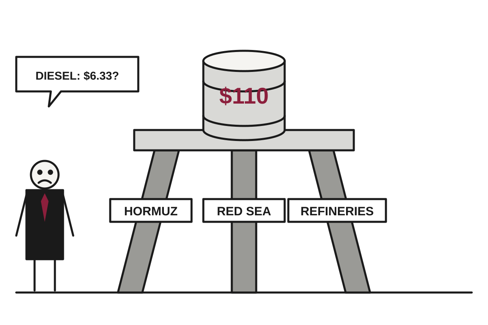

Brent Touches $110 as Three Separate Conflicts Agree on One Thing: Oil Should Cost More
Brent closed at $109.86 Friday as Iranian attacks on Hormuz shipping, Houthi missiles and a collapsed Ukraine-Russia truce combined to lift diesel to $6.33 a gallon.
The wire said: Brent oil touches $110 as Iran escalates Hormuz attacks, Ukraine vows to hit Russian refineries · CNBC Markets

Catch up
Oil has been volatile since the Iran war began, with Hormuz exports recovering to prewar levels in September before falling back. This week brought fresh attacks on ships and Saudi targets, and the energy ceasefire between Ukraine and Russia fell apart.Why it matters
Diesel moves goods, crops and groceries, so a fuel price more than 70% above last year's tends to reappear in everything else. Drivers feel it first at the pump, and everyone else feels it later at the checkout.Brent crude futures touched $110 a barrel on Friday for the first time since May, then eased to close at $109.86, up 3.7%, CNBC reported. U.S. West Texas Intermediate settled at $101.41, up 3.5%. For the week, WTI gained more than 10% and Brent nearly 5%, which suggests the market is capable of panic in more than one benchmark at a time.
The causes arrived in a tidy set of three. Iran escalated attacks in the Strait of Hormuz, Houthi militants fired missiles at Saudi Arabia, and Ukraine vowed to keep hitting Russian refineries. Translation: the world's oil supply is being threatened at the source, along the shipping route, and at the refinery, which is thorough.
Start with Hormuz, the narrow waterway through which a large share of the world's oil travels. At least nine tankers and cargo ships have come under attack since Sunday, CNBC said, as Iran tries to choke off exports. U.S. Central Command said Iran sank the container ship GFS Pride on Wednesday. Singapore's maritime authority said the crew was safely evacuated, though the International Maritime Organization reported three seafarers injured and two missing this week across the attacks.
The physical effect is visible. Kpler data showed crude exports through Hormuz at 9.4 million barrels per day for the week ended Wednesday, about 70% of the average before the Iran war. Exports had touched prewar levels in September, so the recovery lasted roughly as long as a typical diplomatic optimism cycle.
In Saudi Arabia, the military said it intercepted several missiles fired over the Red Sea, including one headed toward the Yanbu oil export terminal, and destroyed three drones. Yanbu matters because it sits on the Red Sea coast, offering an export route that does not require passing through Hormuz. Houthi fire has also hit an Aramco administrative building in Dhahran, according to the energy ministry. Translation: the backup plan is now also a target.
Then there is Ukraine and Russia. The energy ceasefire that President Donald Trump tried to broker has, per CNBC, quickly unraveled, with the Kremlin continuing attacks on Ukrainian infrastructure despite the truce. President Volodymyr Zelenskyy said Kyiv would resume strikes on Russian refineries in retaliation. A ceasefire covering energy, it turns out, requires both sides to stop attacking energy.
Ordinary people meet all this at the diesel pump. AAA put the national average at $6.33 a gallon Friday, more than 70% above a year ago. Refineries turn crude into diesel, so hitting refineries in Russia and energy infrastructure in the Middle East raises the price of the finished product even faster than the crude itself.
One wrinkle: the figures here do not line up neatly. Official data show Brent at 126.55 as of Oct. 14, well above Friday's close in the CNBC report. The sources do not explain the gap, so readers should treat any single oil price this week as a rough guide. U.S. crude was also lifted by an inventory draw of more than 8 million barrels, the EIA said, tied to Gulf Coast shut-ins from Hurricane Isaias.
Watch whether Hormuz exports keep sliding from that 70% mark, and whether Kyiv's refinery strikes resume in earnest. Oil traders, for their part, have been given three reasons to be nervous and have, reasonably, used all of them.
Satire based on reporting by CNBC Markets. Read the originals for the straight version.